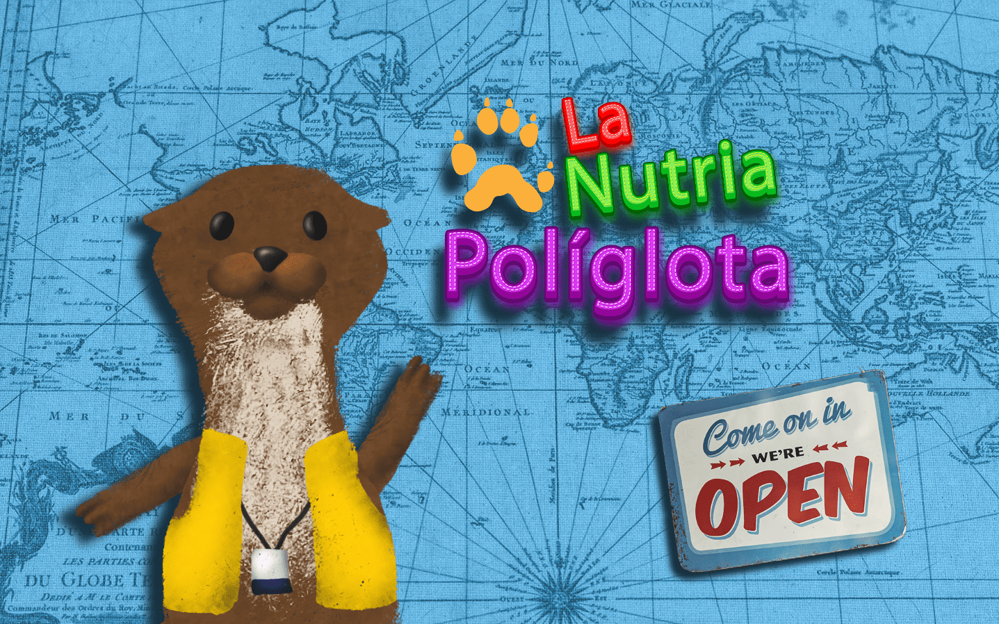

La nutria poliglota
Este videojuego es acerca de una nutria que debe resolver un laberinto para ayudar a unos turistas que perdieron sus cosas. El videojuego esta relacionado a la serie ficticia "La nutria poliglota" y sigue la historia que deja el final de su primer capitulo. Adicionalmente, en la seccion de seleccion de personaje puede desbloquear un nuevo personaje mediante un codigo que esta en la caja del juguete de la nutria. La pantalla principal es la siguiente:
Al darle al botón de open, el jugador será llevado a la pantalla de historieta que muestra una pequeña historia que sigue el hilo que se dejó en la serie.
Luego es conducido a la pantalla de instrucciones donde se le enseña al jugador como jugar junto con una seccion de seleccion de personajes
En el caso de que tenga el codigo, puede desbloquear un aspecto nuevo para la nutria.
Finalmente, cuando el jugador le da a jugar, va a la pantalla de juego donde deberá resolver un laberinto